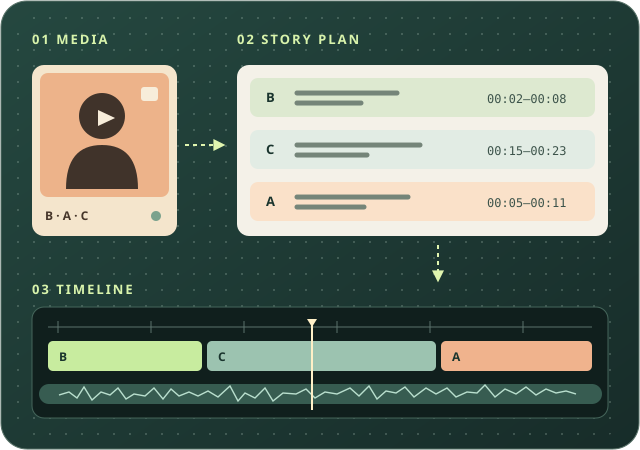
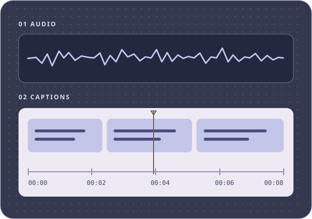

เลือกงานวิดีโอ
เลือกงานที่ต้องการ แล้วสร้างคำสั่งสำหรับวางเรื่อง ตัดต่อ หรือทำซับ

คอนเทนต์ทดลอง
กรอกสินค้า สิ่งที่จะทดลอง และสารที่อยากให้คนดูเข้าใจ แล้วรับคำสั่งสำหรับ Codex
ตั้งโจทย์ → สาธิต → อธิบายผล
สร้างคำสั่งทดลองสินค้า

คอนเทนต์โปรโมชัน
สร้างคำสั่งตัดต่อคลิปปิดการขาย (BOFU) ให้คนดูเข้าใจข้อเสนอและรู้ว่าซื้อได้ที่ไหน
ฮุค → ข้อเสนอ → ช่องทางซื้อ
สร้างคำสั่งโปรโมชัน

ทำซับวิดีโอ
สร้างคำสั่งเพิ่มซับใหม่หรือแก้เฉพาะแทร็ก เลือกซับเต็มหรือซับเน้นสารสำคัญ
ถอดคำพูด → แบ่งวลี → ซิงค์เวลา
สร้างคำสั่งทำซับ
ถ้าเปิดด้วยการทดลองสั้น ๆ เพื่อให้คนดูตัดสินใจซื้อโปร ให้เลือกคอนเทนต์โปรโมชัน แล้วเก็บเฉพาะช่วงทดลองที่ช่วยอธิบายเหตุผลซื้อ